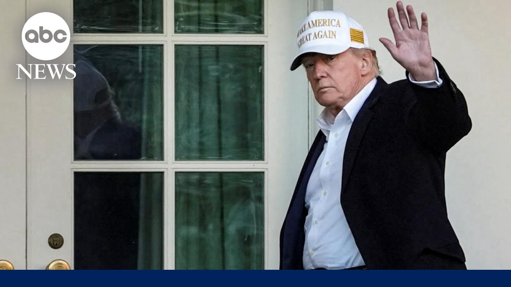

更多有意思的英语学习视频，请到B站Global每日双语简报！
【最新民调显示特朗普在执政百日临近之际面临警告信号】
Summary: The results of a new poll show President Trump with the lowest approval rating in 80 years as he nears his 100-day mark, amid concerns over his economic policies and trade war.
摘要： 最新民调显示，特朗普总统在执政百日临近之际支持率创80年来新低，民众对其经济政策和贸易战表示担忧。

⏱️ Estimated Reading Time: 5 min
The results of our new poll on President Trump.
我们关于特朗普总统的最新民调结果出炉。
As we approach the 100 day mark, he has the lowest approval rating of any president in the past 80 years.
在执政百日临近之际，他的支持率是过去80年来所有总统中最低的。
Chief White House correspondent Mary Bruce has the story.
白宫首席记者玛丽·布鲁斯带来报道。
Good morning, Mary.
早上好，玛丽。
Good morning, George.
早上好，乔治。
While our new polling shows that the president is facing real challenges as he hits the 100 day mark with historically low standing for a president at this early point, even on the issues that helped propel him back here to the White House.
尽管我们的最新民调显示，总统在执政百日之际面临严峻挑战，支持率处于历史低位，即便是在那些曾助他重返白宫的问题上也是如此。
This morning, as President Trump approaches his 100th day back in office, new warning signs about how Americans are viewing his work so far.
今晨，随着特朗普总统执政百日临近，新的警告信号显示美国民众对其工作的评价。
Just 39% approving of how he's handling the job, according to our new ABC News Washington Post Ipsos poll.
根据我们ABC新闻、《华盛顿邮报》和益普索的最新民调，仅39%的人认可他的工作表现。
That's the lowest 100day approval rating of any president in the past 80 years.
这是过去80年来所有总统执政百日支持率的最低纪录。
On the economy, Trump promised to lower costs and boost growth, a message that was key to his victory.
在经济方面，特朗普曾承诺降低成本并促进增长，这一主张是他胜选的关键。
I will instruct my cabinet that I expect results within the first 100 days or much sooner than that.
我将指示内阁，我期望在第一个100天内或更早看到成果。
Now 53% say the economy has gotten worse since Trump took office with 72% saying it's very or somewhat likely his economic policies will cause a recession.
如今53%的人认为自特朗普上任以来经济恶化，72%认为他的经济政策很可能或有点可能导致衰退。
Fears fueled by the president's trade war.
总统的贸易战加剧了这些担忧。
The backlash now felt across the country at explosive town halls.
全国各地的激烈市政厅会议上都能感受到这种反弹。
Overnight in West Nyak, New York, Republican Congressman Mike Lawler getting an earful.
昨晚在纽约州西尼亚克，共和党众议员迈克·劳勒遭到猛烈批评。
And when you look at, for instance, Europe, Europe has price controls on US prescription drugs.
比如欧洲，欧洲对美国处方药实施价格管制。
The president is eager to prove his trade policies are paying off, telling Time magazine he's already made 200 deals despite there only being 195 countries in the world.
总统急于证明其贸易政策正在奏效，他告诉《时代》杂志，尽管全球只有195个国家，但他已达成200项协议。
Though he wouldn't say what they were or which countries are involved.
但他未透露具体内容或涉及哪些国家。
Are Martha Ratits pressing the Treasury Secretary?
玛莎·拉蒂茨是否在追问财政部长？
Is there actually any deal at this point?
目前是否真的有协议？
Uh, I believe that he is referring to sub deals within the negotiations we're doing.
呃，我认为他指的是我们正在谈判中的子协议。
And you know, Martha, if if there are 180, but those aren't actual deals.
玛莎，如果有180项，但这些并非实际协议。
Martha, if there are 180 countries, there are 18 important trading partners.
玛莎，如果有180个国家，其中18个是重要贸易伙伴。
Let's put China to to the side because that's a special negotiation.
让我们先把中国放在一边，因为那是特殊谈判。
There's 17 important trading partners and we have a process in place over the next 90 days to uh negotiate with them.
还有17个重要贸易伙伴，我们已制定流程在未来90天内与他们谈判。
Trump says he will not roll back his staggering 145% tariff on all Chinese products entering the US without substantial concessions.
特朗普表示，若中方不作实质性让步，他不会取消对所有中国输美产品征收的145%高额关税。
Though he claims the US and China are talking, but Beijing says that's not the case.
尽管他声称美中正在对话，但北京方面表示并非如此。
That the two countries are not currently negotiating over tariffs.
两国目前并未就关税问题进行谈判。
And our polling shows Americans have concerns that extend far beyond the economy.
我们的民调显示，美国民众的担忧远超经济领域。
When it comes to the courts and key rulings on cases like immigration, 65% say the administration is trying to avoid complying with federal court orders.
在法院和移民等关键案件裁决方面，65%的人认为政府试图逃避遵守联邦法院命令。
62% saying they don't think the president's administration respects the rule of law.
62%认为总统的政府不尊重法治。
Despite all this, Trump still has an edge over Democrats, beating Democrats in Congress in trust to handle the nation's main problems.
尽管如此，特朗普仍领先民主党，在民众信任度上胜过国会民主党处理国家主要问题的能力。
And this morning, the president is reflecting on the difference between his first and second term, telling The Atlantic, quote, "The first time I had two things to do, run the country and survive.
今晨，总统反思其第一任期与第二任期的区别，告诉《大西洋月刊》："第一次我有两件事要做，治理国家和生存。"
Now he says, quote, "The second time I run the country and the world."
现在他说："第二次我治理国家和世界。"
George.
乔治。
Okay, Mary.
好的，玛丽。
Thanks.
谢谢。
And the president will be sitting down with our Terry Moran for an exclusive interview as he marks his first 100 days in office.
总统将接受我们特瑞·莫兰的独家专访，纪念其执政百日。
You can see it tomorrow night, 87 central, right here on
您可以在明晚8点7分（中部时间）在此收看。